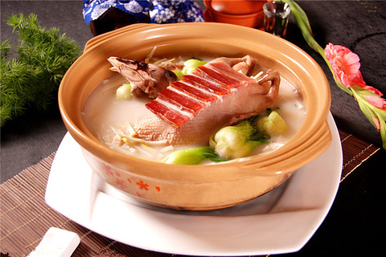

东坡肉
东坡肉，相传是北宋诗人苏东坡在杭州任地方官时所创制，也有一说是后人为了纪念苏东坡疏浚西湖、筑堤灌田、造福百姓而烹调。正宗的东坡肉，挑选肥瘦均匀的上等猪肉，搭配酒、酱油、香葱、姜、糖等，置于密封砂锅内用文火焖制而成，成品皮薄肉嫩，色泽红亮，酥而不碎，油而不腻，食用时味醇汁浓，口感温润。
龙井虾仁

龙井虾仁选用“色绿、香郁、味甘、形美”的明前龙井新茶和鲜河虾仁烹制而成。成菜虾仁白玉鲜嫩，茶叶碧绿清香，色泽雅致，滋味独特。
叫化童子鸡
叫化童鸡是一道蜚声中外的杭州名菜。传说在古时战乱年代，不少百姓家破人亡，沦为乞丐（杭州俗称叫化子）。一天，有一叫化子弄到一只鸡，可又缺锅少灶。饥饿难忍之际，他便仿效烤红薯的方法，用烂泥将鸡涂包起来，放在石块垒成的“灶”上拾点干柴煨烤，过了一会儿，泥干鸡熟，他随手拿起放在地上，鸡毛脱落，顿时香气四溢。叫化子美美地饱餐了一顿。后来，这种泥烤技法传入菜馆、酒楼，厨师们又不断改进，在煨烤的泥巴中加入绍酒，将鸡包以西湖荷叶烤制，使荷叶的清香和母鸡的鲜香融为一体。于是经历年延传下来，“叫化童鸡”的名声远扬。
笋干老鸭煲

笋干老鸭煲是浙江杭州地区汉族传统名菜之一。在杭州的知名度相当高，烧的时候要用文火炖四五个小时。最大的特色是汤醇味浓，油而不腻，酥而不烂，吃来蛮开胃。
黄鱼面
杭州酱鸭，选用当年饲养成熟的肥壮鸭子，以及姜、酱油、绍酒、葱段、白糖等辅料，先用精盐腌制，后以兑水煮沸后的酱油（卤水）浇淋浸泡制成，其肉色枣红，芳香油润，咸中带甜，味道鲜美，富有回味，还可以配酒食用，是杭州传统风味名菜。